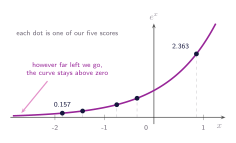
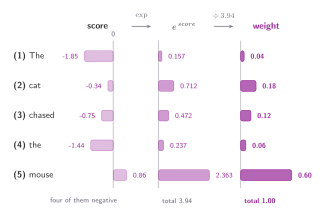

04 · Queries, Keys, and Values
From Scores to Weights
Softmax, sharpness, and why we divide the scores.
What a weight has to be
We ended the last section holding five numbers and a complaint that they weren't weights. So what would make them weights? Short wish list. They should be positive (we like positives). They should add up to one, so that in proportion it means something to us. And the order should have some meaning, that is the word that scored highest still ends up with the biggest weight. Anything that pulls off those three things will do.
Softmax
The operation that does all three is called softmax, and it has two steps. First, raise $e$ to the power of each score. Then divide each result by the total of all of them.
As it can be seen in the figure below, $e^{x}$ is positive for every $x$. It never reaches zero and it never crosses below it. So the exponential, make sure our numbers go positive, and we did not have to clip anything or take an absolute value to get there.

Once everything is positive, dividing by the total makes the numbers to add up to one, which is all in proportion. And the ordering survives both steps, because $e^{x}$ is increasing function, a bigger score always gives a bigger exponential, and dividing every one of them by the same total doesn't reorder them.

Analyzing the spread
Something quite interesting about softmax is that it is shift-invariant, meaning
for any constant $c$ added to every score. It follows in one line from the definition:
The factor $e^{c}$ appears once in the numerator and in every term of the denominator, so it cancels. Softmax never sees the scores themselves, only the differences between them.
It's important to note that softmax is not invariant to scaling. Replacing $s$ by $\alpha s$ multiplies every gap by $\alpha$.
So why does any of this matter? The reason is because we don't get to pick the scale of our scores. As we saw in the previous section, a score is calculated as a sum of $d$ products. This means that the more values we include in each vector, the larger the resulting scores tend to be. The scale isn't a setting we are able to tweak, it naturally drifts as the dimension changes. And because the softmax function is reactive to the size of the gaps between these scores, changing the dimension alters how focused the attention mechanism is.
That is easier to see than to describe. Take the same five scores and stretch or squash the gaps between them: multiply every score by 3, then by a quarter, and run softmax on each. The ordering never moves, mouse stays on top in all three, but the shape of the answer changes completely.
| word | scores × ¼ | scores as they are | scores × 3 |
|---|---|---|---|
| (1) The | 0.15 | 0.04 | 0.00 |
| (2) cat | 0.21 | 0.18 | 0.03 |
| (3) chased | 0.19 | 0.12 | 0.01 |
| (4) the | 0.16 | 0.06 | 0.00 |
| (5) mouse | 0.29 | 0.60 | 0.96 |
Consider what these two extremes actually represent. Squashed, every word gets roughly a fifth of the attention. The result is a blend of all five values with mouse barely favoured, meaning the model has effectively processed nothing of value. On the other hand when scores are stretched, mouse takes 0.96 and everything else rounds away to nothing, which is the exact-match lookup we threw away back in section 02, arrived at by accident. Neither end is any use to us, and we never chose either of them. The dimension did.
Here's why the stretched end costs us. In section 02 we rejected the exact match because it gave us no slope, and a nearly one-hot softmax has the same problem in a somewhat milder form. The derivative of a weight with respect to its own score is $w(1 - w)$, which is largest around $w = 0.5$ and collapses as $w$ approaches 0 or 1. At 0.96 and 0.00 there is barely any gradient left, so the model can barely learn that it attended to the wrong word. So sharpening the weights does not only make the answer narrow, as it also makes the mistake difficult to correct/learn.
Aside: where $w(1-w)$ comes from
It is the quotient rule applied to the softmax definition. Give the denominator a name, $Z = \sum_j e^{s_j}$, so that the weight is simply $w_i = e^{s_i} / Z$.
Start with $\partial Z / \partial s_i$. Write $Z$ out with its terms visible:
We are differentiating with respect to $s_i$, the score of one particular word. Every other term in that sum holds a score we are not moving, so each of them is a constant here and differentiates to zero. Exactly one term survives, $e^{s_i}$, and since $e^{x}$ is its own derivative it differentiates to itself:
Now the quotient rule on $w_i = e^{s_i} / Z$, where the numerator also differentiates to $e^{s_i}$:
The last step just recognises $e^{s_i} / Z$ as $w_i$, twice over. That substitution is what turns a formula about scores into a formula about weights.
Now differentiate the same weight $w_i$ with respect to a different word's score $s_j$. This time the numerator $e^{s_i}$ contains no $s_j$ at all, so it comes along as a constant, and the only thing that moves is the denominator, which contributes $\partial Z / \partial s_j = e^{s_j}$. Writing $w_i = e^{s_i} Z^{-1}$ and differentiating the $Z^{-1}$ gives a factor of $-Z^{-2}$, so
What it's interesting here is that raising one word's score pushes every other word's weight down. The leading minus sign means the overall rate of change is strictly negative. This is how the five weights keep summing to one whichever score we move.
The Jacobian, and why it matters
We now have two cases, and they can be written as one expression:
where $\delta_{ij}$ is 1 when $i = j$ and 0 otherwise, so the expression collapses to $w_i(1 - w_i)$ on the diagonal and to $-w_i w_j$ off it. Collecting every combination of $i$ and $j$ gives a square table of numbers, five by five for our sentence, and that table is the Jacobian: the derivative of a vector output with respect to a vector input.
Entry $(i, j)$ answers one question, namely how much weight $i$ moves when score $j$ is nudged.
When the model gets an answer wrong, the correction arrives at the weights, and this table is what carries it back to the scores, and from there to the queries and keys that produced them. If every entry is near zero, the correction arrives and nothing moves.
That is exactly what saturation does. Every entry of $J$ is built from products of weights, so a distribution like $(0.00,\, 0.03,\, 0.01,\, 0.00,\, 0.96)$ makes the whole table collapse: the diagonal entries $w_i(1 - w_i)$ vanish because each $w_i$ is close to 0 or to 1, and the off-diagonal entries $-w_i w_j$ vanish because at least one of the two weights in every product is tiny.
Dividing by the square root of the dimension
If the scores grow as the vectors get longer, we can shrink them back by the same amount before the softmax ever sees them. The only question is how much to shrink by, and the answer turns out to be $\sqrt{d_k}$, the square root of the number of entries in each key.
Here is where this square root comes from. A score is a sum of $d_k$ products, one for each position in the two vectors. Suppose those components are roughly independent, centred on zero, with a spread of about 1. Then each product is a number of typical size 1, and when we add up $d_k$ independent quantities their variances add. This creates a total variance of $d_k$ and a typical spread of $\sqrt{d_k}$. For instance, a 64-dimensional model yields scores with spread around 8. A spread of 8 is exactly what causes the extreme results seen in the right-hand column of the table above. By dividing by $\sqrt{d_k}$, we return the spread to about 1 regardless of the model's dimension.
Therefore, we adjust the scores before they reach the softmax function by:
In summary
We divide the attention scores by the square root of the dimension, $\sqrt{d_k}$, before applying softmax, to stop large dot products from pushing the softmax into regions where the gradients are extremely small.
When we multiply a random variable by a scaling constant $C$, its variance is multiplied by $C^2$. To bring a variance of $d_k$ back down to a variance of 1, we therefore need $C^{2} d_k = 1$, which gives $C = \frac{1}{\sqrt{d_k}}$. Multiplying by that constant is the same as dividing by $\sqrt{d_k}$, and squaring it gives $\left( \frac{1}{\sqrt{d_k}} \right)^2 = \frac{1}{d_k}$, which perfectly neutralises the $d_k$ growth.
It's important to highlight some points:
- The assumption of independent, well-behaved values only applies when a model is first initialised. Nothing forces a trained model to keep its queries and keys that well behaved.
- $\sqrt{d_k}$ is a sensibly chosen constant that keeps the scores in a workable range. It is not a guarantee that they stay there.
That leaves us somewhere much better. Sharpness no longer depends on how wide the model happens to be, so a 64-dimensional model and a 512-dimensional one begin equally focused rather than one of them starting out saturated. And if by any means the model does want sharper attention, it can have it, by learning to produce larger queries and keys.
What we have not done is scale up in the other direction. What I mean by this is that everything we have done so far is one query against five keys, worked one dot product at a time. A real model runs every position's query against every key in the sentence, and all of that at the same time. The next section will explain how exactly we can achieve that.